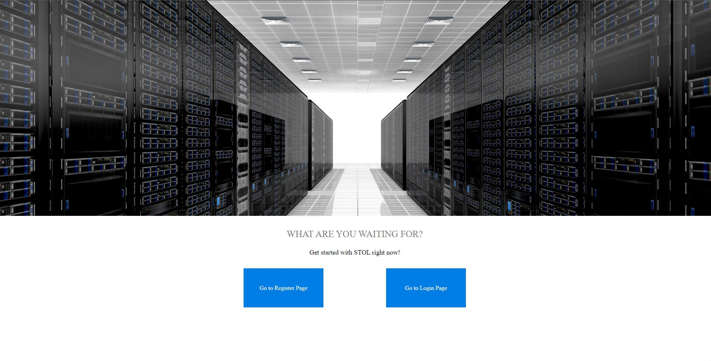
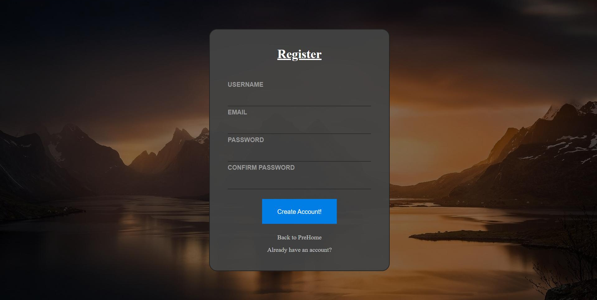
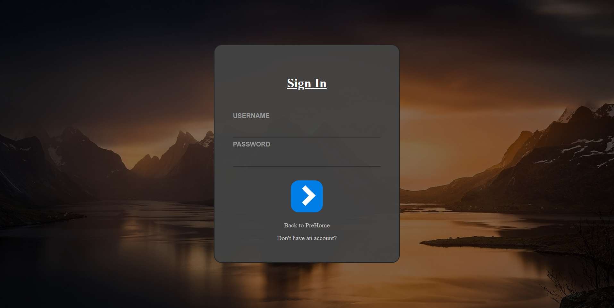
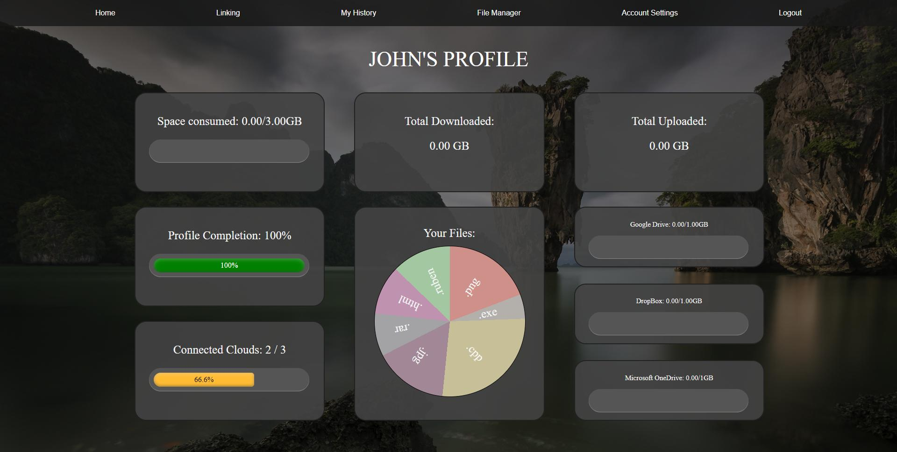
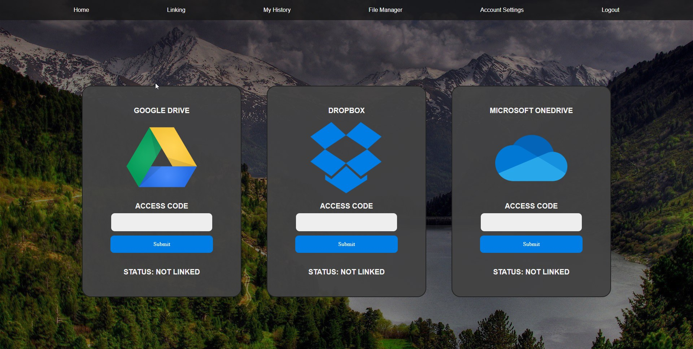
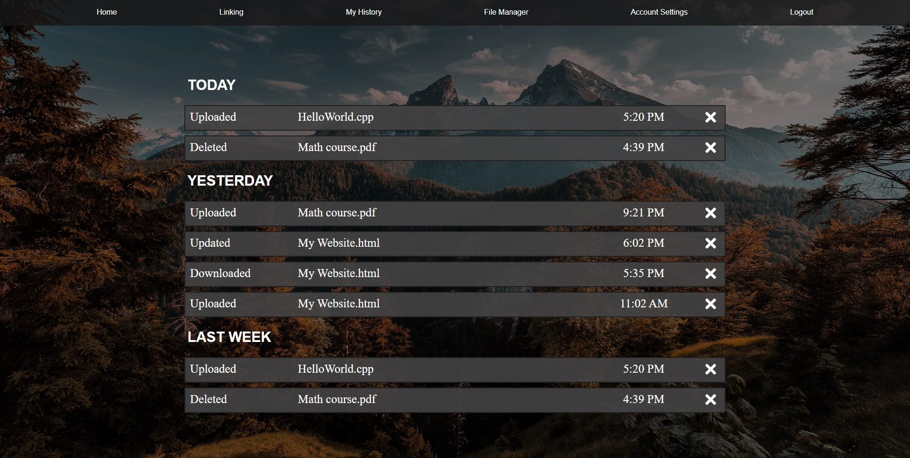
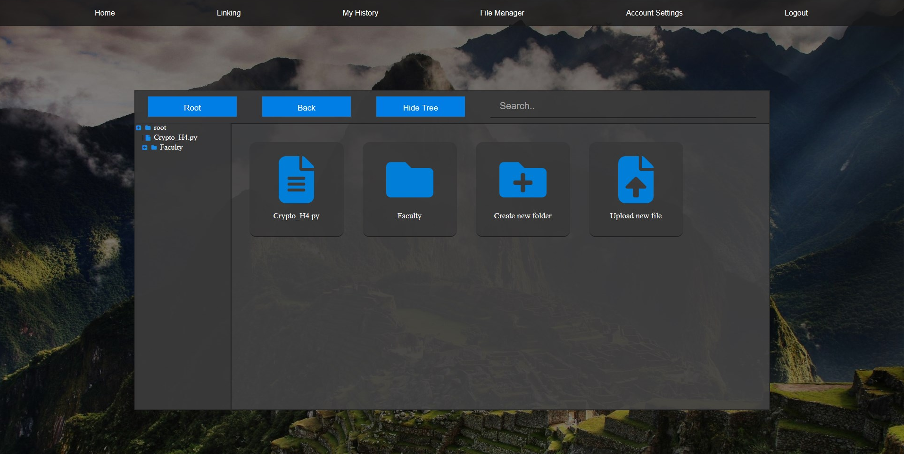
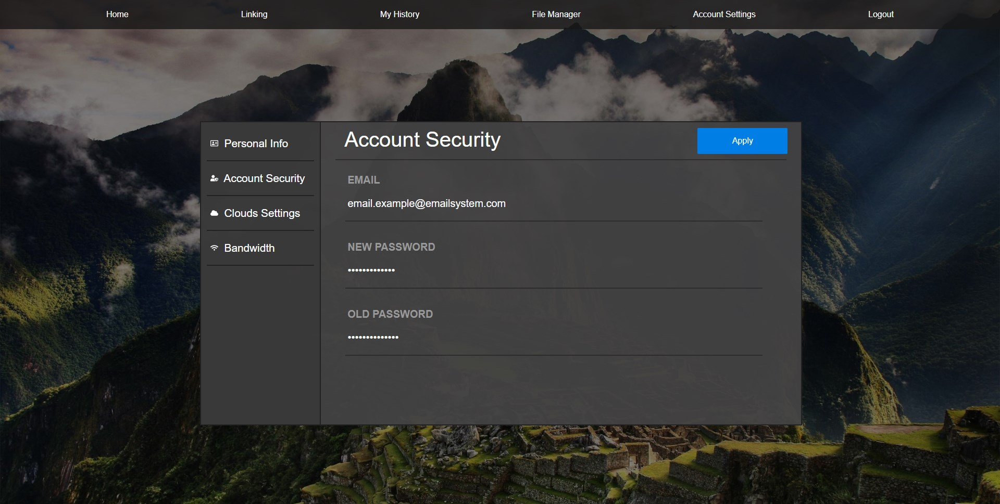
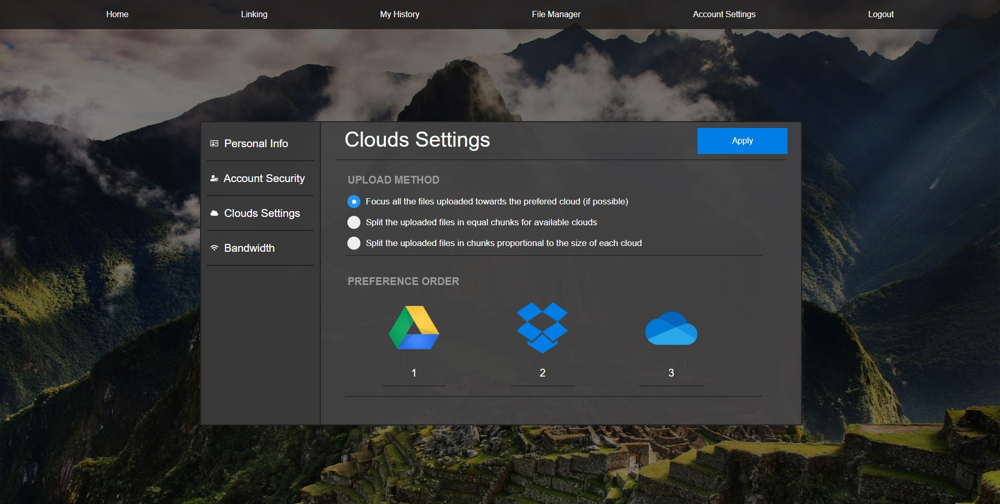
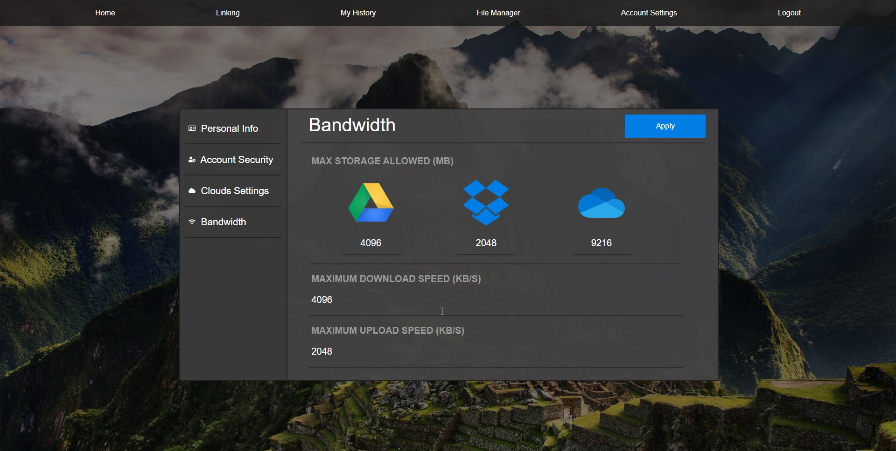

1. Prehome
On prehome there is a general description of the application
The only interactive buttons are the ones from the end of the page:

The left one Redirects the user to Register Page
The right one Redirects the user to Login Page
2. Register
On the register page the user can create an account for the STOL application

The interactive parts are:
- Username input field - The input for the desired username
- Email input field - The input for the valid email adress of the user
- Password field - The input for choosing a password inside the STOL APP
- Confirm password field - The user must retype the same password to make
sure that there is no mistake
- Create Account Button - The user must press the button after he has completed
all the field in order to create an account. If the account is succesfully created
the user will be notifed and redirected to Settings Page
- Back to PreHome Button - Redirects the user to PreHome page
- Already have an account? Button - Redirects the user to Login Page
3. Login
On the login page the user can input his created account and enter in the STOL main page

The interactive parts are:
- Username input field - The user has to put the username of a valid created account
- Password field - The user has to put the password that matches the picked username
- Login button (the arrow shape)- The user must press the button in orded to send the
given username and the crypted password towards the server. If the given information is valid,
the the user will be redirected to home page, otherwise the user will be warned that the
given information is invalid and will remain on the same page.
- Back to PreHome button - Redirects the user to PreHome page
- Don't have an account? button - Redirects the user to Register Page
4. Navigation bar
The navigation bar has 5 diferent buttons that will redirect the user to the clicked location,
and a logout button that the user can use in order to log out from the current session in the
STOL Application
The possible locations are:
- Home
- Linking
- My History
- File Manager
- Account Settings
Pictures with the navigation bar will can be seen in the following sections
5. Home
Home is the main page where the user can see statistics about his actions

6. Linking
This is the main place where any users can link their clouds accounts to their STOL account.
The application will later use the given information to put the future uploaded files.

The interactive parts are:
- The Logo Button - Redirects the user to the login page of the specific API
- The code input - In this input, the access code will be put in order to gain
authority from the requested API.The Google Drive and Microsoft OneDrive will autocomplete
the access code, after you access them.
- Submit Button - The user must press this button to submit the acces code to
the STOL server. If the code is invalid or expired, the user will be warned. Once the acces
code are correct, the submit button will be disabled.
7. My History
Any relevant action will be saved and displayed on this page. The user can choose to clean
up any action from the history and can navigate through the actions

All actions are saved under the next format:
- Action Type: Upload / Update / Download / Delete
- Name: File's name that had the action applied
- Time: Action's hours and minutes that they were registred on
- Remove Button: The user can use it to clear the action from the history
8. File Manager
The main place where the user can upload / download / rename / delete files

The interactive parts are:
- Root button
- Back button
- Hide/Show Tree button
- Any file from the manager
- Any folder from the manger
- Create new folder
- Upload new file
- Any file from tree
- Any folder from tree
9. Settings
The user can edit and specify any settings that are required, and can also navigate
through the 4 tabs of settings using the left-sided menu.
Any actions will be saved only after the apply button is pressed by the user.
The left sided menu can navigate any user through a simple click to:
9.1. Personal Info
The user can modify the personal data given to STOL
The interactive parts are:
- First name input field
- Last name input field
- Gender input field
- Country input field
- Birthday selector field
9.2. Account Security
The user can modify his email and/or password

The interactive parts are:
- Email input field
- New Password input field
- Old Password input field
9.3. Clouds Settings
The user can specify the upload method and the preference order for the clouds

The interactive parts are:
- Upload Method 1 radio button
- Upload Method 2 radio button
- Upload Method 3 radio button
- Preference Input Google Drive
- Preference Input DropBox
- Preference Input Microsoft Onedrive
9.4. Bandwidth
The user can specify the allowed bandwidth and the maximum allowed storage space
for every clouds system

The interactive parts are:
- Storage Input Google Drive
- Storage Input DropBox
- Storage Input Microsoft Onedrive
- Maximum download speed input
- Maximum upload speed input